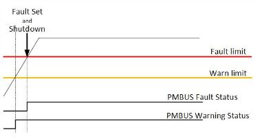
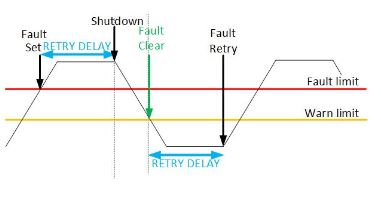
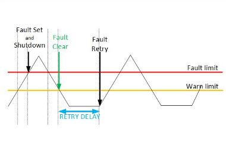
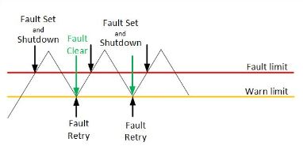
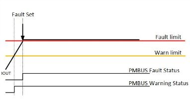
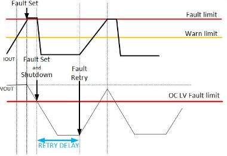
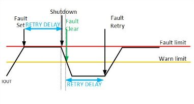
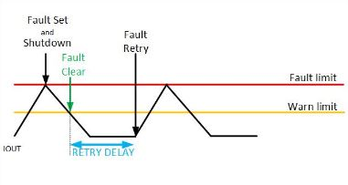

|
XDPP1100 Firmware
The firmware documentation for the XDPP1100 device family.
|


|
|
XDPP1100 Firmware
The firmware documentation for the XDPP1100 device family.
|
|
FAULTS driver handles version 1.0. The Faults firmware module is a CMSIS style driver. See ARM_DRIVER_FAULTS for driver struct. Terminology Assumptions: API - Application layer interface used by user for access to firmware module. Driver - Shortened to drv in file naming. Tends to wrap the hardware abstraction layer for accessing a particular hardware block.
When the driver detects a warning, condition where the problem is present but is not severe, the driver latches the status in fault_status_event_latch _FAULT_DRV_s and reports it via PMBUS. If the sensed condition is more serious and can damage the on-board devices or load it is said to be a fault. In case of fault the driver together with the hardware module provides shutdown and retry capability configured by PMBUS response command Fault Response.
Fault hardware module has a comparator for each hardware fault and warn type with fault and warn limits configured by the driver from pmbus limit commands (for ex., VOUT_OV_FAULT_LIMIT and VOUT_OV_WARN_LIMIT). If enabled hardware module tristates the pwm output and sends a fault interrupt signal each time the fault or warn is set and cleared.
In order to avoid system overloading from an oscillating fault the driver supports a warning hysteresis. In other words, the fault condition is cleared not when the faulted signal is gone below the fault limit but when it is below the corresponding warn limit. For example, VOUT OV fault is latched when VOUT is above VOUT_OV_FAULT_LIMIT and is cleared when below VOUT_OV_WARN_LIMIT. Fault hysteresis is setup by FAULTS_SETUP_FAULT api by providing FAULT_TYPE_t hysteresis argument. After fault is set it is disabled by the driver until the faulted signal has gone below the warn limit. Fault clear interrupt will occur when below the warn limit.
Since not all the faults have a corresponding warn or hysteresis is not desired, the hysteresis fault clear can be avoided by setting FAULT_TYPE_t hysteresis argument to itself.
The driver also supports a "0" in the FAULT_TYPE_t hysteresis argument dedicated to the faults that can't clear after the fault is latched and/or the device is shutdown. Example would be VOUT_UV_FAULT where after the device is shutdown VOUT can't go back above the fault limit until restarted. NOTE: VOUT_UV_FAULT is not disabled by the driver. It is disabled by regulation state machine Fault masking.
The list of all supported fault types with its hysteresis type can be found in a table Supported Fault Types.
The options for response to a fault include shutting down the output immediately or after preset timeout, continuing to operate while maintaining the output current or ignoring the fault. The converter can also be programmed to restart in a number of ways including trying to restart when the fault is cleared, restarting in programmed number of times or restarting in programmed delay time.
The driver allows for 2 types of responses to a fault RESPONSE_CONFIG_e :
A list of all responses is enumerated in _FAULT_RESPONSE_TYPE__e and described in a table:
| FAULT_RESPONSE__e | FAULT_ RESPONSE _TYPE_t | RESPONSE_CONFIG_e | SPEC section | Response Command bits[7:6] | Description |
|---|---|---|---|---|---|
| FAULT_RESPONSE_IGNORE |

0 | VOLTAGE_RESPONSE_TYPE | 10.5.1 | 00 | Device reports a fault on pmbus status bits and continues operation without interruption. |
| FAULT_RESPONSE_RETRY_OPERATION |

1 | VOLTAGE_RESPONSE_TYPE | 10.5.1 | 01 | Device reports a fault on pmbus status bits and continues operation for the delay time. If the fault condition is still present the device shuts down at the end of the delay time. Retry number can be programmed. |
| FAULT_RESPONSE_RETRY_SHUTDOWN |

2 | VOLTAGE_RESPONSE_TYPE | 10.5.1 | 10 | Device reports a fault on pmbus status bits and shuts down. Retry number can be programmed. |
| FAULT_RESPONSE_SHUTDOWN_RESTART _WHEN_REMOVED |

3 | VOLTAGE_RESPONSE_TYPE | 10.5.1 | 11 | Device reports a fault on pmbus status bits, shuts down and restarts the operation when fault condition no longer exists. |
| FAULT_RESPONSE_IOUT_CONSTANT_CURRENT |

4 | CURRENT_RESPONSE_TYPE | 10.5.2 | 00 | Device reports a fault on pmbus status bits and continues to operate while maintaining the output current. |
| FAULT_RESPONSE_IOUT_CONSTANT_CURRENT _WITH_OC_LV |

5 | CURRENT_RESPONSE_TYPE | 10.5.2 | 01 | Device reports a fault on pmbus status bits and continues to operate while maintaining the output current. Device will shutdown when preset output under voltage threshold has been reached. Retry number can be programmed. |
| FAULT_RESPONSE_IOUT_DELAY_WITH_CC_RETRY |

6 | CURRENT_RESPONSE_TYPE | 10.5.2 | 10 | Device reports a fault on pmbus status bits and continues to operate while maintaining the output current for the delay time. If the fault condition is still present the device shuts down at the end of the delay time. Retry number can be programmed. |
| FAULT_RESPONSE_IOUT_SHUTDOWN_AND_RETRY |

7 | CURRENT_RESPONSE_TYPE | 10.5.2 | 11 | Device reports a fault on pmbus status bits and shuts down. Retry number can be programmed. |
For faults that have a supported pmbus response command fault retry count should be set by setting Retry_Setting bits[5:3] of fault response command byte (Section 10.5 of PMBUS SPEC 1.3). A value of 000 means that the device does not attempt to restart, value of 001 - 110 - device will restart 1 to 6 times according to the number set by these bits. Value of 111 means the device will continue to retry indefinitely.
The list of all supported fault types with its hysteresis, response type, associated pmbus limit, response, status and delay config can be found in a table Supported Fault Types.
For other user faults retry count can be set through Retry_Setting[5:3] of fault_response_byte argument of FAULTS_SETUP_FAULT api. fault_response_byte follows pmbus response byte format: Response[7:6], Retry_Setting[5:3] and Delay_Time[2:0]. For fault setup example see Fault Response Setup.
Retry count is cleared in the following cases:
For faults that have a supported pmbus response command fault retry delay should be set by setting Delay_Time bits[2:0] of fault response command byte (Section 10.5 of PMBUS SPEC 1.3). Time delay between retries in milliseconds (Delay_time_ms) is equal to (1<<Delay_Time) * Delay_Unit, where Delay unit varies depending on the type of fault and is configured by FW_CONFIG_FAULTS pmbus command bit [7:0] FAULTS_CONFIG_e.
| Bit | Field Name | Meaning |
|---|---|---|
| 7:6 | Vout_Delay_Unit | Time unit for retry responses. 0: 1ms, 1: 4ms, 2: 16ms, 3: 256ms |
| 5:4 | Vin_Delay_Unit | Time unit for retry responses. 0: 1ms, 1: 4ms, 2: 16ms, 3: 256m |
| 3:2 | Iout_Delay_Unit | Time unit for retry responses. 0: 1ms, 1: 4ms, 2: 16ms, 3: 256m |
| 1:0 | Temperature_Delay_Unit | Time unit for retry responses. 0: 1ms, 1: 4ms, 2: 16ms, 3: 256m |
The list of all supported fault types with its hysteresis, response type, associated pmbus limit, response, status and delay config can be found in a table Supported Fault Types.
For other user faults that don't have a corresponding pmbus response command retry Delay can be set through Delay_Time[5:3] of fault_response_byte argument of FAULTS_SETUP_FAULT api. fault_response_byte follows pmbus response byte format: Response[7:6], Retry_Setting[5:3] and Delay_Time[2:0]. For fault setup example see Fault Response Setup.
For faults that have a supported pmbus response command Fault response type, hiccup count and retry delay should be set by writing fault response byte (Response[7:6], Retry_Setting{5:3] and Delay_Time[2:0]) to that command (Section 10.5 of PMBUS SPEC 1.3).
For example, to set the response of VOUT_OV_FAULT to FAULT_RESPONSE_RETRY_SHUTDOWN with 6 hiccups and retry delay of (1<<0) * FW_CONFIG_FAULTS[FAULTS_CONFIG_VOUT_DELAY_UNIT] VOUT_OV_FAULT_RESPONSE command should be sent with the value of 0xB0. Not other setup is needed. FAULT_TYPE_VOUT_OV_FAULT is already configured as VOLTAGE_RESPONSE_TYPE with FAULTS_CONFIG_VOUT_DELAY_UNIT, FAULT_TYPE_VOUT_OV_WARN as hysteresis to be reported on PMBUS_CMDCODE_STATUS_VOUT with bit position of PMBUS_STATUS_VOUT_OV_FAULT.
The list of all supported fault types with its hysteresis, response type, associated pmbus limit, response, status and delay config can be found in a table Supported Fault Types.
For other user faults fault response can be set through FAULTS_SETUP_FAULT api. Example shows how to setup an external fault with response FAULT_RESPONSE_RETRY_SHUTDOWN, 6 hiccups with retry delay of (1<<0) * FW_CONFIG_FAULTS[FAULTS_CONFIG_VOUT_DELAY_UNIT]
Even though FAULT_TYPE_IOUT_UC_FAULT is Iout related it follows VOLTAGE_RESPONSE_TYPE with a separate meaning of FAULT_RESPONSE_SHUTDOWN_RESTART_WHEN_REMOVED response : Device reports a fault on pmbus status bits, shuts down SR FETS ONLY and restarts SR FETS when fault condition no longer exists.
FAULT_TYPE_IOUT_UC_FAULT is hysteresis to itself type fault. It is set when IOUT is below the limit set by IOUT_UC_FAULT_LIMIT and cleared when IOUT is back above the same limit. It is configured as VOLTAGE_RESPONSE_TYPE with FAULTS_CONFIG_IOUT_DELAY_UNIT, It reports on PMBUS_CMDCODE_STATUS_IOUT with bit position of PMBUS_STATUS_IOUT_UC_FAULT(bit 4). Response type, retry count and retry delay are configured by IOUT_UC_FAULT_RESPONSE command. Retry delay unit is set by pmbus command FW_CONFIG_FAULTS[3:2] - "FAULTS_CONFIG_IOUT_DELAY_UNIT".
If the device detects one of the listed conditions it latches a bit in the corresponding PMBUS Status Command so that it could be read by the user. The table of all supported fault types Supported Fault Types shows which Status bit in which Pmbus Command is set when fault/warn occurs.
The pmbus status bit is latched and remains set until until the following occurs(Section 10.2.3 of PMBUS SPEC 1.3):
When the ENABLE signal(depending on ON_OFF_CONFIG could be: CONTROL pin, OPERATION command, both CONTROL pin and OPERATION or just application of input power) is toggled off and then back on.
Faults can be completely disabled and masked from being reported on PMBUS individually with the pmbus command FW_CONFIG_FAULTS.
| Bit | Field Name | Meaning |
|---|---|---|
| 167:136 | Fault_enable_mask_loop_common | Masking for loop common faults enable |
| 135:104 | Fault_enable_mask_loop_fw | Masking for loop fw faults enable |
| 103:72 | Fault_enable_mask_loop_hw | Masking for loop hw faults enable |
Fault masking is done through Faults_Mask_Fault api by specifying loop, hw of fw fault type and setting set_mask of clear_mask. Setting 1 to the bits of set_mask will enable the corresponding fault and setting 1 to clear_mask disables the fault. Setting of 0 will remain the enable mask unchanged. Set_mask and clear_mask bits [32:0] correspond to FAULT_TYPE_t enum 0 - 31 for hw faults and enum 31 - 63 for fw faults.
The faults that are already masked in certain states/controls by Regulation_Fault_Mask are shown in the table.
| REGULATION_STATE | REGULATION_ CONTROLS_ SHUTDOWN | REGULATION_ CONTROLS_ SHUTDOWN_ IMMEDIATE | REGULATION_ CONTROLS_ ENABLE | REGULATION_ CONTROLS_ FAULT |
|---|---|---|---|---|
| REGULATION_STATE_OFF | x FAULT_TYPE_VOUT_UV_FAULT | x FAULT_TYPE_VOUT_UV_FAULT | ||
| x FAULT_TYPE_VOUT_UV_WARN | x FAULT_TYPE_VOUT_UV_WARN | |||
| x FAULT_TYPE_IOUT_OC_LV_FAULT | x FAULT_TYPE_IOUT_OC_LV_FAULT | |||
| x FAULT_TYPE_PIN_OP_WARN | x FAULT_TYPE_PIN_OP_WARN | |||
| x FAULT_TYPE_POUT_OP_WARN | x FAULT_TYPE_POUT_OP_WARN | |||
| REGULATION_STATE_TON_DELAY | ||||
| REGULATION_STATE_TON_RISE | FAULT_TYPE_IOUT_OC_LV_FAULT | |||
| REGULATION_STATE_AT_TARGET_VID | FAULT_TYPE_VOUT_UV_FAULT | |||
| FAULT_TYPE_VOUT_UV_WARN | ||||
| FAULT_TYPE_PIN_OP_WARN | ||||
| FAULT_TYPE_POUT_OP_WARN | ||||
| REGULATION_STATE_TOFF_DELAY | ||||
| REGULATION_STATE_TOFF_FALL | x FAULT_TYPE_VOUT_UV_FAULT | x FAULT_TYPE_VOUT_UV_FAULT | ||
| x FAULT_TYPE_VOUT_UV_WARN | x FAULT_TYPE_VOUT_UV_WARN | |||
| x FAULT_TYPE_IOUT_OC_LV_FAULT | x FAULT_TYPE_IOUT_OC_LV_FAULT | |||
| x FAULT_TYPE_PIN_OP_WARN | x FAULT_TYPE_PIN_OP_WARN | |||
| x FAULT_TYPE_POUT_OP_WARN | x FAULT_TYPE_POUT_OP_WARN | |||
| REGULATION_STATE_FAULT | x FAULT_TYPE_VOUT_UV_FAULT | x FAULT_TYPE_VOUT_UV_FAULT | x FAULT_TYPE_VOUT_UV_FAULT | |
| x FAULT_TYPE_VOUT_UV_WARN | x FAULT_TYPE_VOUT_UV_WARN | x FAULT_TYPE_VOUT_UV_WARN | ||
| x FAULT_TYPE_IOUT_OC_LV_FAULT | x FAULT_TYPE_IOUT_OC_LV_FAULT | x FAULT_TYPE_IOUT_OC_LV_FAULT | ||
| x FAULT_TYPE_PIN_OP_WARN | x FAULT_TYPE_PIN_OP_WARN | x FAULT_TYPE_PIN_OP_WARN | ||
| x FAULT_TYPE_POUT_OP_WARN | x FAULT_TYPE_POUT_OP_WARN | x FAULT_TYPE_POUT_OP_WARN |
Example shows vout uv fault which is masked until the unit reaches target voltage and when the device is disabled.(Section 15.6 of PMBUS SPEC 1.3)
Fault pin is asserted in Fault IRQ handler for both shutdown and warning event of any FAULT_TYPE_t. Faults can be masked individually from being output on the Fault pin with the pmbus command FW_CONFIG_FAULTS.
| Bit | Field Name | Meaning |
|---|---|---|
| 71:40 | Fault_pin_mask_fw | Masking for firmware faults |
| 39:8 | Fault_pin_mask_hw | Masking for hardware faults |
Fault hardware module has a comparator for each fault type FAULT_TYPE_t and sets the FAULT_TYPE_t bit number in fault_status register for each rising and falling edge of fault comparator (if enabled by fault_enable). Since comparators used are level detect type comparators faults hardware uses fault_polarity to ensure fault_status is set only once for each fault set and clear detected. Fault_polarity is controlled by faults driver. The value of 0 assumes initial polarity of comparator (for ex., above the threshold for OV type and below the threshold for UV) and the value of 1 is inverses the comparator polarity. Faults module uses fault_shut_mask to determine which fault type FAULT_TYPE_t disables the pwm output when the faulted signal goes depending on comparator polarity above or below the fault threshold. fault_shut_mask register is set by pmbus fault response or configured by FAULTS_SETUP_FAULT api Fault Response Setup. When fault for which fault_shut_mask is set occurs pwm outputs stay gated until the state machine is moved to the REGULATION_STATE_FAULT state. Shutdown sequence is executed in the fault state to turn off both primary and sr fets, set vramp_on signal, clear vcontrol irq and set OFF bit in STATUS_WORD. To signal the hardware that shutdown sequence is complete fault_shut_clr register is set.
Faults module triggers interrupt for each FAULT_TYPE_t fault_status bit set on first come first serve basis. The status of which interrupt came in is read by the driver from fault_encode. Fault interrupt can't be triggered while fault_shut_o is set high. fault_shut_o is cleared by fault_shut_clr signal after the fault has been processed by the state machine (shutdown sequence and/or retry timer activation).
Faults interrupt occurs each time the fault_status register is set meaning interrupt happens for each rising and falling edge of fault comparator. The faults driver determines which interrupt came in from the fault_encode register. Faults driver clears the fault status, latches the firmware fault status and flips the fault_polarity. Faults driver job is to determine the priority based on the fault response and send the message REGULATION_CONTROLS_FAULT REGULATION_CONTROLS to regulation state machine REGULATION_Thread to move the sate to REGULATION_STATE_FAULT REGULATION_STATE to perform the shutdown sequence or REGULATION_CONTROLS_FAULT with FAULT_CONTROL_RETRY (0x100) FAULT_CONTROLS to signal retry if fault cleared. In REGULATION_STATE_FAULT REGULATION_CONTROLS FW completes shutdown related cleanup (e.g., Vcontrol target returned to 0, appropriate blocks disabled) and activates the timer for retry delay in case of FAULT_CONTROL_RETRY (0x100) FAULT_CONTROLS.
The driver operates on each FAULT_TYPE_t based on struct _FAULT_s that is setup by FAULTS_SETUP_FAULT and contains FAULT_RESPONSE_TYPE_t, retry count, delay time between retries, FAULT_TYPE_t of its hysteresis, pmbus_status_command and pmbus_status_bit_position for reporting on pmbus status.
The first 32 types of FAULT_TYPE_t are hardware type and have hardware comparators associated with them. The rest of 32 are firmware faults that are set by fault api.
Firmware fault is set by Set_Firmware_Fault:
Firmware fault is cleared by Set_Firmware_Fault:
Fault handler is executed each time the firmware fault is set and cleared. Faults handler is the same as for hw faults and uses the FAULT_TYPE_t argument of Set_Firmware_fault and Clear_Firmware_Fault for its fault_encode.
The faults driver supports both pmbus and non-pmbus faults and warns with a total of up to 60 fault/warn types: 30 hardware and 30 firmware faults. All of the supported faults and warns are enumerated in _FAULT_TYPE_t . Fault_types 0-31 are hardware faults with a comparator and fault status trigger in hardware. Fault_types 0 and 31 are reserved for driver operation as RESERVED_HW_NO_FAULT_NO_HYSTERSIS_CONDITION and FAULT_TYPE__END_OF_HW_FAULT_TYPES. Fault_types 32-63 are firmware faults that do not have a hardware comparator associated with them. Fault status set for these types of fault is in firmware. Fault types 32 and 63 are reserved for driver operation as RESERVED_FW_NO_FAULT_NO_HYSTERSIS_CONDITION and FAULT_TYPE__END_OF_FAULT_TYPES.
The list of all supported fault types with its hysteresis, response type, associated pmbus limit, response, status and delay config is presented in a table:
| FAULT_TYPE_t | hw / fw | Hysteresis FAULT_TYPE__e | Response config | Pmbus Threshold Command | Pmbus Response Command or Response Type | Pmbus Status Command | Pmbus Status Bit Position | Config_Delay_Unit |
|---|---|---|---|---|---|---|---|---|
| reserved_hw_no_fault | ||||||||
| fault_type_vout_ov_fault | hw | fault_type_vout_ov_warn | voltage_response_type | vout_ov_fault_limit | vout_ov_fault_response | status_vout | 7 vout ov fault | vout_delay_unit |
| fault_type_vout_ov_warn | hw | fault_type_vout_ov_fault | voltage_response_type | vout_ov_warn_limit | fault_response_ignore | status_vout | 6 vout ov warning | |
| fault_type_vout_uv_fault | hw | 0 | voltage_response_type | vout_uv_fault_limit | vout_uv_fault_response | status_vout | 4 vout uv fault | vout_delay_unit |
| fault_type_vout_uv_warn | hw | 0 | voltage_response_type | vout_uv_warn_limit | fault_response_ignore | status_vout | 5 vout uv warning | |
| fault_type_vin_ov_fault | hw | fault_type_vin_ov_warn | voltage_response_type | vin_ov_fault_limit | vin_ov_fault_response | status_input | 7 vin ov fault | vin_delay_unit |
| fault_type_vin_ov_warn | hw | fault_type_vin_ov_fault | voltage_response_type | vin_ov_warn_limit | fault_response_ignore | status_input | 6 vin ov warning | |
| fault_type_vin_uv_fault | hw | fault_type_vin_uv_warn | voltage_response_type | vin_uv_fault_limit | vin_uv_faultresponse | status_input | 4 vin uv fault | vin_delay_unit |
| fault_type_vin_uv_warn | hw | fault_type_vin_uv_fault | voltage_response_type | vin_uv_warn_limit | fault_response_ignore | status_input | 5 vin uv warning | |
| fault_type_iout_oc_fault | hw | fault_type_iout_oc_warn | current_response_type | iout_oc_fault_limit | iout_ocfault_response | status_iout | 7 iout oc fault | vout_delay_unit |
| fault_type_iout_oc_lv_fault | hw | 0 | voltage_response_type | iout_oc_lv_fault_limit | fault_response_retry _shutdown | status_iout | 6 iout oc fault w/LVShutdown | vout_delay_unit |
| fault_type_iout_oc_warn | hw | fault_type_iout_oc_fault | current_response_type | iout_oc_warn_limit | fault_response_ignore | status_iout | 5 iout oc warning | |
| fault_type_iout_uc_fault | hw | fault_type_iout_uc_fault | voltage_response_type | iout_uc_fault_limit | iout_uc_fault_response | status_iout | 4 iout uc fault | iout_delay_unit |
| fault_type_mfr_iout_oc_fast | hw | fault_type_mfr_iout_oc_fast | current_response_type | mfr_iout_oc_fault_limit | mfr_iout_oc_fast_fault _response | status_mfr_specific | 5 mfr | iout_delay_unit |
| fault_type_iin_oc_fault | hw | fault_type_iin_oc_warn | voltage_response_type | iin_oc_fault_limit | iin_oc_fault_response | status_input | 2 iin oc fault | vin_delay_unit |
| fault_type_iin_oc_warn | hw | fault_type_iin_oc_fault | voltage_response_type | iin_oc_warn_limit | fault_response_ignore | status_input | 1 iin oc warning | |
| fault_type_ot_fault | hw | fault_type_ot_warn | voltage_response_type | ot_fault_limit | ot_fault_response | status_temperature | 7 ot fault | temp_delay_unit |
| fault_type_ot_warn | hw | fault_type_ot_fault | voltage_response_type | ot_warn_limit | fault_response_ignore | status_temperature | 6 ot warning | |
| fault_type_ut_fault | hw | fault_type_ut_warn | voltage_response_type | ut_fault_limit | ut_fault_response | status_temperature | 4 ut fault | temp_delay_unit |
| fault_type_ut_warn | hw | fault_type_ut_fault | voltage_response_type | ut_warn_limit | fault_response_ignore | status_temperature | 5 ut warning | |
| fault_type_in_power_limiting _mode | hw | 0 | voltage_response_type | fault_response_ignore | status_iout | 2 in power limiting mode | ||
| fault_type_current_share_fault | hw | 0 | voltage_response_type | fault_response_ignore | status_iout | 3 current share fault | ||
| fault_type_vout_max_mix_warn | hw | 0 | voltage_response_type | vout_max, vout_min | fault_response_ignore | status_vout | 3 vout max min warning | |
| fault_type_sync_fault | hw | 0 | voltage_response_type | fault_response_ignore | status_mfr_specific | 7 mfr | ||
| fault_type_flux_balance_fault | hw | 0 | voltage_response_type | fault_response_ignore | status_mfr_specific | 6 mfr | ||
| hw_spare1 | hw | |||||||
| hw_spare2 | hw | |||||||
| hw_spare3 | hw | |||||||
| hw_spare4 | hw | |||||||
| hw_spare5 | hw | |||||||
| hw_spare6 | hw | |||||||
| fault_type__end_of_hw_fault _types | ||||||||
| reserved_fw_no_fault | ||||||||
| fault_type_common_shutdown | fw | 0 | voltage_response_type | fault_response_retry _shutdown | status_mfr_specific | 5 mfr | ||
| fault_type_ton_max_fault | fw | 0 | voltage_response_type | ton_max_fault_limit | fault_response_ignore | status_vout | 2 ton max fault | vout_delay_unit |
| fault_type_toff_max_warn | fw | 0 | voltage_response_type | toff_max_fault_limit | fault_response_ignore | status_vout | 1 toff max warning | |
| fault_type_pin_op_warn | fw | 0 | voltage_response_type | pin_op_warn_limit | fault_response_ignore | status_input | 0 pin op warning | |
| fault_type_pout_op_warn | fw | 0 | voltage_response_type | pout_op_warn_limit | fault_response_ignore | status_iout | 0 pout op warning | |
| fw_spare1 | fw | |||||||
| fw_spare2 | fw | |||||||
| fw_spare3 | fw | |||||||
| fw_spare4 | fw | |||||||
| fw_spare5 | fw | |||||||
| fw_spare6 | fw | |||||||
| fw_spare7 | fw | |||||||
| fw_spare8 | fw | |||||||
| fw_spare9 | fw | |||||||
| fw_spare10 | fw | |||||||
| fw_spare11 | fw | |||||||
| fw_spare12 | fw | |||||||
| fw_spare13 | fw | |||||||
| fw_spare14 | fw | |||||||
| fw_spare15 | fw | |||||||
| fw_spare16 | fw | |||||||
| fw_spare17 | fw | |||||||
| fw_spare18 | fw | |||||||
| fw_spare19 | fw | |||||||
| fw_spare20 | fw | |||||||
| fw_spare21 | fw | |||||||
| fw_spare22 | fw | |||||||
| fw_spare23 | fw | |||||||
| fw_spare24 | fw | |||||||
| fault_type__end_of_fault _types |
FAULT_TYPE_VOUT_OV_FAULT is a hysteresis type fault. It is set when VOUT is above the limit set by VOUT_OV_FAULT_LIMIT and cleared when VOUT is below VOUT_OV_WARN_LIMIT. It is setup as VOLTAGE_RESPONSE_TYPE with FAULTS_CONFIG_VOUT_DELAY_UNIT. VOUT_OV_FAULT is reported on PMBUS_CMDCODE_STATUS_VOUT with bit position of PMBUS_STATUS_VOUT_OV_FAULT(bit 7). Response type, retry count and retry delay are configured by VOUT_OV_FAULT_RESPONSE command. Retry delay unit is set by pmbus command FW_CONFIG_FAULTS[7:6] - "FAULTS_CONFIG_VOUT_DELAY_UNIT".
FAULT_TYPE_VOUT_UV_FAULT is a non hysteresis type fault. It is set when VOUT is below the limit set by VOUT_UV_FAULT_LIMIT and cleared by the driver in the REGULATION_STATE_FAULT. It is configured as VOLTAGE_RESPONSE_TYPE with FAULTS_CONFIG_VOUT_DELAY_UNIT, It reports on PMBUS_CMDCODE_STATUS_VOUT with bit position of PMBUS_STATUS_VOUT_UV_FAULT(bit 4). Response type, retry count and retry delay are configured by VOUT_UV_FAULT_RESPONSE command. Retry delay unit is set by pmbus command FW_CONFIG_FAULTS[7:6] - "FAULTS_CONFIG_VOUT_DELAY_UNIT". VOUT_UV_FAULT is masked until the unit reaches target voltage and when the device is disabled (Section 15.6 of PMBUS SPEC 1.3). Refer to vout uv fault masking picture in Fault masking.
FAULT_TYPE_VIN_UV_FAULT is a hysteresis type fault. It is set when VIN is below the limit set by VIN_UV_FAULT_LIMIT and cleared when VIN is above VIN_UV_WARN_LIMIT. It is configured as VOLTAGE_RESPONSE_TYPE with FAULTS_CONFIG_VIN_DELAY_UNIT, It reports on PMBUS_CMDCODE_STATUS_INPUT with bit position of PMBUS_STATUS_VIN_UV_FAULT(bit 4). Response type, retry count and retry delay are configured by VIN_UV_FAULT_RESPONSE command. Retry delay unit is set by pmbus command FW_CONFIG_FAULTS[5:4] - "FAULTS_CONFIG_VIN_DELAY_UNIT".
Vin is the input voltage applied to the primary side of the transformer. The device is capable of sensing this directly through the telemetry ADC (LSADC) but this requires additional isolation ($ and board area) and is generally too slow to be useful for PID Feed forward.
Vrect (rectification voltage) is Vin reflected to the secondary side of the transformer and is only available when the primary side is switching. We sense this using one of the high speed voltage sense ADC's. Since this voltage is only available after we start switching we do not have the actual Vin telemetry prior to attempting to startup. Input voltage source can be selected by tlm_vin_src_sel(regmap_telem) register. When input voltage source is set to Vrect1 or Vrect2 in order to avoid fault/warn tripping (input voltage telemetry is not available) and to have initial value for feed forward vrs_voltage_init
FAULT_TYPE_IOUT_OC_FAULT is a hysteresis type fault. It is set when IOUT is above the limit set by IOUT_OC_FAULT_LIMIT and cleared when IOUT is below IOUT_OC_WARN_LIMIT. It is setup as CURRENT_RESPONSE_TYPE with FAULTS_CONFIG_IOUT_DELAY_UNIT. IOUT_OC_FAULT is reported on PMBUS_CMDCODE_STATUS_IOUT with bit position of PMBUS_STATUS_IOUT_OC_FAULT(bit 7). Response type, retry count and retry delay are configured by IOUT_OC_FAULT_RESPONSE command. Retry delay unit is set by pmbus command FW_CONFIG_FAULTS[3:2] - "FAULTS_CONFIG_IOUT_DELAY_UNIT".
Picture below shows IOUT_OC_FAULT with constant current response. Constant current mechanism is implemented in hardware through adjustment of the vcontrol output. Fault IRQ is still triggered but since there is no shutdown fault control is not being sent to state machine. iout_cc_mode serves as an indicator of the constant current mode.
 1.8.9.1
1.8.9.1